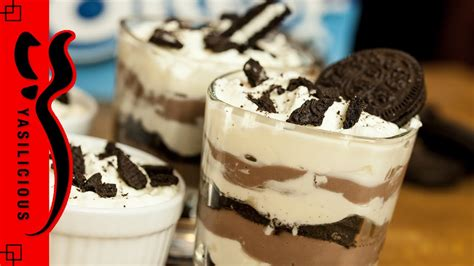

130 Dessert im Glas - Die einfachsten Rezepte-Ideen in 2021 | rezepte, dessert, lecker
2021.06.21 14:29
Dessert im Glas - Die einfachsten Rezepte
Collection by Einfach backen • Last updated 12 days ago
135 Pins • 72.22k FollowersSie sind im Handumdrehen fertig, sehen wunderschön aus und sind unglaublich lecker – die Rede ist von Dessert im Glas. Ob fruchtig, schokoladig oder einfach nur himmlisch cremig, auf dieser Pinnwand findest du die besten und einfachsten Rezeptideen für leckeres Dessert im Glas. #dessert #dessertimglas #schnellesdessert #cremig
Schneller Bananenjoghurt
Super simpel, aber echt lecker: Bananenjoghurt mit Zitronensaft, Honig und Zimt. Die Joghurt-Creme kannst du ganz einfach selber machen. #einfachbacken #joghurt #bananen #joghurtcreme #bananenjoghurt #nlitzrezept #dessertimglas #nachtisch #fruchtig #sommerdessert
Cool Whip Graham Vanilla Cream Looks Yummy Panna Cotta Sweet Treats Cheesecake Strawberry Dessert RecipesJoghurt-Mousse
· 1 review · 70 minutes ·Erfrischend anders und herrlich fruchtig: Das ist unsere selbstgemachte Joghurtmousse. Mit Sahne wird die Mousse schön cremig, Zitrone und Himbeere sorgen für feine Frische. #einfachbacken #joghurtmousse #mousse #dessertimglas #himbeerdessert #cremig #nachtisch #sommerdessert #cremedessert #moussedessert
Detox Shakes Kiwi Dessert Detox Kur Health Cleanse Panna Cotta Healthy Sweet Ethnic Recipes DessertsKiwi-Dessert
Unser schnelles Rezept mit süß-saurem Obstpüree und feiner Mascarpone-Creme ist fix im Glas geschichtet - und sieht so toll aus! #einfachbacken #kiwi #kiwidessert #dessertimglas #nachtisch #sommerdessert #obstpüree #mascarponecreme #kiwifrucht #schichtdessert
Panna Cotta Sweet Treats Food Porn Ethnic Recipes Mascarpone Just Bake Sweet Recipes Food And Drinks Morning Sayings20 Min. Schokokuss-Dessert
· 1 review · 20 minutes ·Einfach und so lecker: dieses cremige Schokokuss-Dessert mit Quark und Sahne kommt einfach immer gut an. Besonders lecker finden wir die selbstgemachte Himbeersoße. #einfachbacken #schokokuss #himbeerdessert #quarkdessert #dessertimglas #himbeersoße #schichtdessert #nachtisch #blitzrezept #schnelledesserts
10 Summer Desserts No Bake Desserts Dessert Recipes Kiwi Dessert Vegetarian Desserts Cream Liqueur Chocolate Desserts Love Food Mango 56Desserts im Glas
Tiramisu Dessert Just Bake Italian Desserts New Years Eve
Rhabarber-Tiramisu im Glas - das beste Rezept
· 5 reviews · 30 minutes ·Der Klassiker Tiramisu passt nahezu zu jedem Anlass. Egal ob Silvester, Parties oder ein einfaches Picknick. Das italienische Dessert ist superschnell gemacht und so lecker. #einfachbacken #rhabarber #tiramisu #dessert #nachtisch #lecker
Super Smoothie Panna Cotta Health Fitness Snacks Ethnic Recipes Food Deserts LemonButtermilch im Glas
Das einfache Rezept für cremig-süßes Buttermilch-Dessert ist ein echter Evergreen. Das selbstgemachte Dessert mit Joghurt und Zitrone kommt bei allen super an. #einfachbacken #dessertimglas #buttermilch #buttermilchdessert #evergreen #nachtisch #joghurtdessrt #zitronendessert #zitronig #gartenfest
Pudding Desserts Creme Dessert Super Rum Panna Cotta Ethnic Recipes Food Just Bake Food FoodHerrencreme im Glas
· 2 reviews · 50 minutes ·Ein mit Rum verfeinertes Puddingdessert im Glas. Dieses Rezept für eine feine Herrencreme kannst du auch super schon am Vortag zubereiten. #einfachbacken #herrencreme #dessertimglas #nachtisch #cremedessert #puddingdessert #schokosplitter #vorbereiten
0:06 Mousse Dessert Gelatine Vegetables Food Mascarpone Strawberries Just Bake Strawberry Mousse Easy DessertsErdbeer-Mousse ohne Gelatine - einfach und lecker
· 6 reviews · 20 minutes ·Ein einfaches Rezept für ein Erdbeer-Mousse-Dessert mit Mascarpone. Herrlich cremig und ganz ohne Gelatine. Das perfekte Sommerdessert! #einfachbacken #erdbeeren #dessert #mousse #nachtisch #cremig #lecker
Pudding Desserts Chia Pudding Raspberry Strawberry Super Food And Drink Dinner Fruit No Sugar DessertsVeganer Chia Pudding
Dieser vegane Chiapudding mit Pflanzenmilch ist super cremig und das ideale Frühstück. Unser einfaches Rezept ohne Zucker gelingt dir garantiert und sorgt für einen gesunden Snack am Morgen. #einfachbacken #chiasamen #chiapudding #pudding #dessertimglas #vegan #snack #frühstück #zuckerfrei ohnezucker #puddingdessert
0:06 Mango Desserts Snacks Pudding Sweets Dinner Fruit Food Yogurt Recipes Finger FoodMango-Dessert - schnelles Rezept mit Joghurt
· 7 reviews · 20 minutes ·Fruchtiges Mango-Püree wird abwechselnd mit Joghurt in einem Glas geschichtet. Mit nur wenigen Zutaten macht sich dieses Rezept perfekt für die nächste Party oder als schneller Snack im Sommer. #einfachbacken #mango #püree #joghurt #sommer #erfrischend #lecker
0:06 Tiramisu Pudding Ethnic Recipes Food Yogurt Raspberries Just Bake Easy Desserts Custard PuddingHimbeer-Dessert im Glas - das Blitzrezept
· 17 reviews · 15 minutes ·Dieses himmlisch leichte Himbeer-Dessert mit Joghurt ist in nur 15 Minuten vorbereitet und kann direkt vernascht werden! #einfachbacken #dessert #nachtisch #himbeeren #früchte #joghurt #lecker #obst
0:06 Baby Co After Ice Ice Baby Creme Pudding Food Just Bake Easy Desserts Classic CheesecakeAfter Eight-Creme im Glas - Rezept
· 3 reviews · 20 minutes ·Die After Eight-Creme ist so unwiderstehlich, dass man nicht genug davon haben kann. Der Magerquark macht das Dessert richtig cremig und das After Eight verleiht ihm den typisch minzigen Geschmack. #einfachbacken #aftereight #creme #nachtisch #dessert #quark #minze
Baileys Dessert Mousse Dessert Oreo Dessert Spring Rolls Sweet Treats Deserts Food And Drink Pudding SweetsCremiges Baileys-Dessert
· 2 reviews · 60 minutes ·Dieses Baileys-Dessert mit Schokokeksen, Zartbitterschokolade, Irish-Coffee-Likör und Schlagsahne ist zwar nur was für Erwachsene – die werden die Baileys-Creme aber lieben! #einfachbacken #baileys #dessert #nachspeise #party #buffet
Buffet Tiramisu Ethnic Recipes Food Yogurt Raspberries Just Bake Treats MealSchnelles Himbeer-Dessert im Glas
· 17 reviews · 15 minutes ·Dieses himmlisch leichte Himbeer-Dessert mit Joghurt ist in nur 15 Minuten vorbereitet und kann direkt vernascht werden! #einfachbacken #himbeere #dessert #nachspeise #buffet
Muffins Sweet Treats Brunch Food And Drink Pudding Chinese Snacks Ethnic Recipes Sweet RecipesPanna Cotta mit Himbeeren
Dieses klassische Dessert im Glas überzeugt mit der cremigen Panna Cotta-Schicht mit feiner Vanillenote. Der zarte Himbeerspiegel rundet das Panna Cotta im Glas perfekt ab. #einfachbacken #pannacotta #dessert #buffet #nachspeise #party #dessertideen
Privacy